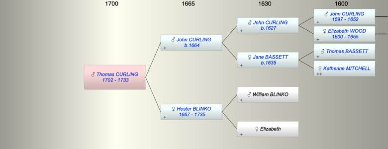

| [Index] |
| Thomas CURLING (1702 - 1733) |
|  |
| b. 1702 at St Laurence |
| d. 03 Mar 1733 at St Laurence aged 31 |
| Parents: |
| John CURLING (1664 - ) |
| Hester BLINKO (1667 - 1735) |
| Siblings (5): |
| Elizabeth CURLING (1691 - ) |
| John CURLING (1694 - ) |
| Jane CURLING (1696 - 1764) |
| William CURLING (1698 - 1728) |
| Bridger CURLING (1705 - 1746) |
| Events in Thomas CURLING (1702 - 1733)'s life | |||||
| Date | Age | Event | Place | Notes | Src |
| 1702 | Thomas CURLING was born | St Laurence | Note 1 | ||
| 03 Mar 1733 | 31 | Thomas CURLING died | St Laurence | Note 2 | |
| Personal Notes: |
|
Nuncupative will of Thomas Curling late of Hornsey but at Highgate 1733 gives £20 each to his sisters (unclear whether plural or possesive) children. refers to his brother Bridger. ' He the said Thomas Curling deceased at the same time laying his hand upon his Sister Sarah Curling then present) Whereupon the said Samuel Emes asked the
deceased if he meant the Legacys above mentioned given to his Sister to be his Sister the said Sarah Curling and her Children or to his other Sister to which the said deceased replyed Yes to this Sister (meaning the said Sarah Curling and her Children his sister Sarah and her children. No reference to his other siblings. On 13 Mar 1734 his mother Hester and next of kin was given power to "administer" the will as there was no executor. This was duly passed to Bridger Curling and Jane Hooper wife of Nicholas Hooper his natural and lawful only brother and sister. Why did he go on about his sister Sarah? Perhaps his sister in law. Thomas' sister Jane had a son Nicholas Hooper who married a Sarah. This rules out John b 1694 as a contender to marry Mary Kirby. |
| Created on a Mac™ using iFamily for Mac™ on 8 Oct 2023 |